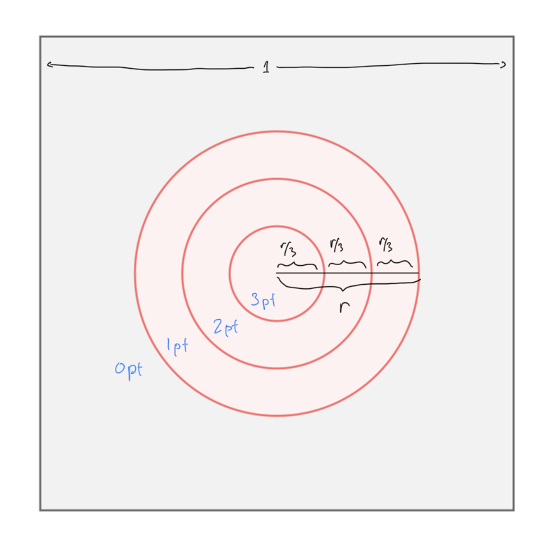

Midterm 1
Instructions: read each problem carefully and provide answers in the space below. Your answers should display your reasoning clearly. If you use results from class in your answer, you can simply write, “by a theorem from class…”, and need not identify the result by name. You do not need to justify small steps in this way. You also do not need to calculate decimals or perform any burdensome calculations, but you should simplify your answers as much as possible. Please feel free to ask any clarifying questions about the problems. You have 50 minutes to complete the exam. Good luck!
- Consider a dart board comprising concentric circles with radii \(r, \frac{2}{3}r, \frac{1}{3}r\), as depicted below. Suppose this board is mounted on a unit square, and that for an inexperienced player, the probability of hitting each region is simply the area of that region. Assume that a throw will land within the unit square. The scoring rules are: 0 points are awarded if the board is missed, 1 point is awarded for hitting the outermost circle, 2 points are awarded for hitting the middle circle, and 3 points are awarded for hitting the inner circle. Find an expression for the probability of scoring \(i\) points on a single throw and show (or argue) that it is a valid probability measure.

Imagine you work a summer job at a theme park. At the entrance there are 5 ticket booths, and on a particular morning, there are 200 people waiting at the entrance. Everyone waiting must choose one line and buy a ticket individually. You’re working at the first ticket booth, and it takes you exactly 2 minutes to process each transaction. After you finish selling the morning tickets, you’ll take a break. If customers select their lines at random and no new customers arrive, what is the probability that you’ll be on break in exactly an hour?
Suppose you’ve developed a machine learning model to classify activity patterns as “at work” or “not at work” based on user cell phone data. In testing prior to deployment, you assess performance on timepoints sampled from 1000 users whose information was not used in the development of the model; of those, 800 users were working during the sampled timepoints. Denote the event that a user is at work by \(W\) and the event that a user is predicted as at work by \(V\). Suppose you observe that for a randomly selected user from this test group: \[ \begin{align*} P(V\;|W) &= 0.9 \\ P\left(V^C\;|W^C\right) &= 0.3 \end{align*} \]
- How many of your model predictions were correct?
- What is the probability that the prediction was correct for a randomly selected user in the test group?
- If your model predicts that a user in the test group is not at work, what is the probability that the prediction is correct?